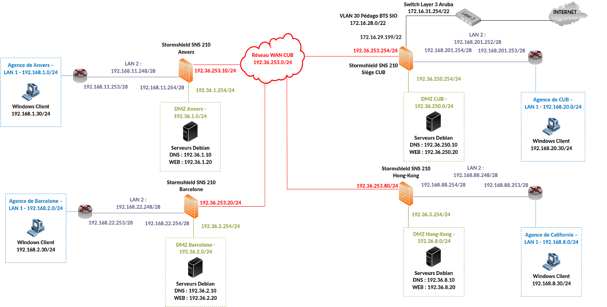
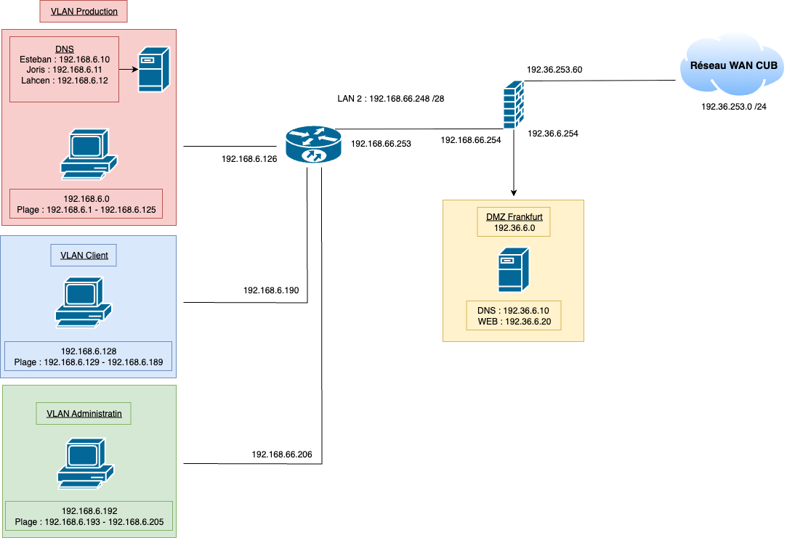
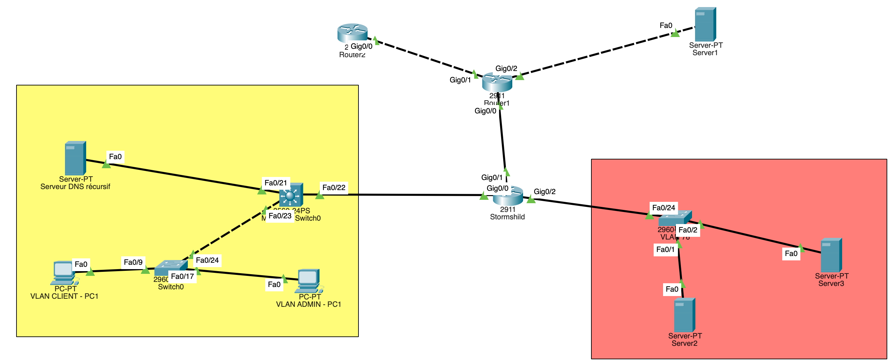
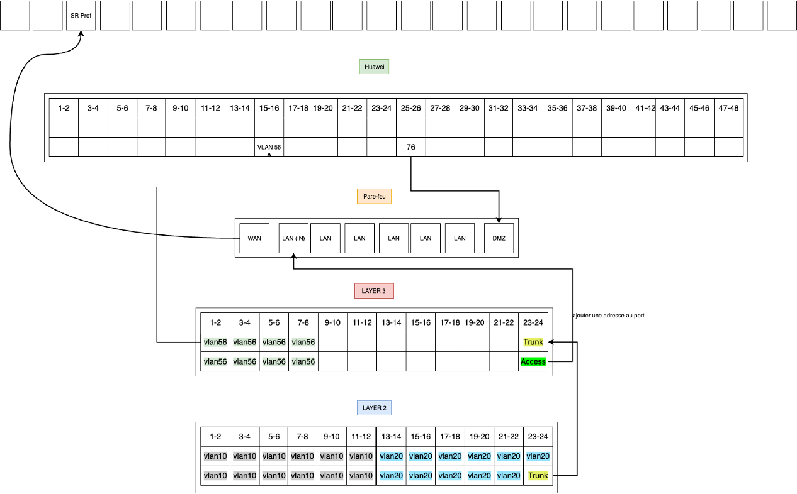
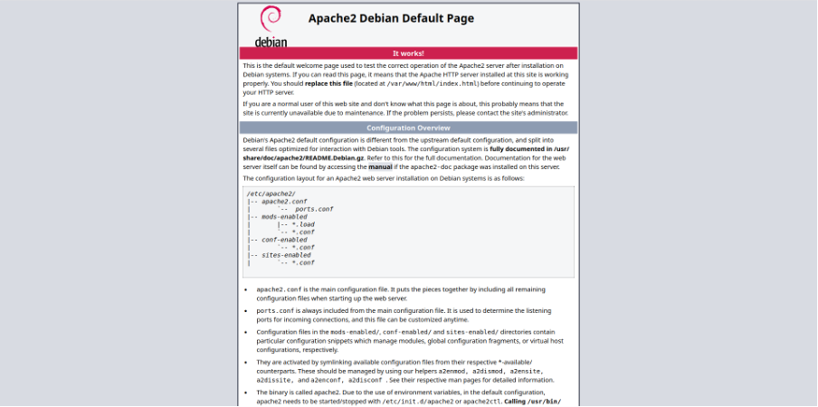
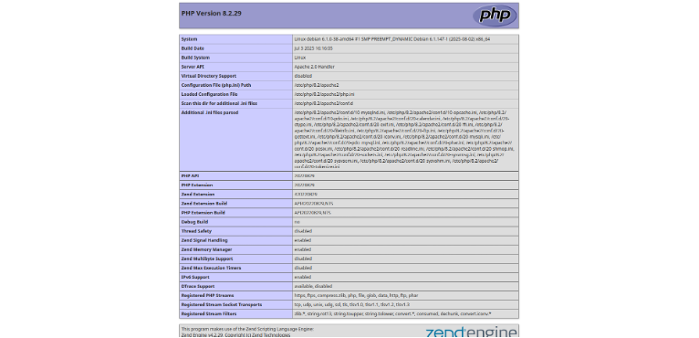

I - Serveur LAMP sous Debian 12
Prérequis

Ducumentation en ligne : https://cubdocumentation.sioplc.fr
Adressage
| Puissance de 2 | Valeur |
|---|---|
| 2⁰ | 1 |
| 2¹ | 2 |
| 2² | 4 |
| 2³ | 8 |
| 2⁴ | 16 |
| 2⁵ | 32 |
| 2⁶ | 64 |
| 2⁷ | 128 |
Adresse réseau : 192.168.6.0/24
| Service | Nombre d’hôtes | Adresse réseau | Masque de sous-réseau | Adresse de diffusion | Description VLAN |
|---|---|---|---|---|---|
| Production | 120 | 192.168.6.0 | 255.255.255.128 | 192.168.6.127 | VLAN 56 |
| Client 1 | 32 | 192.168.6.128 | 255.255.255.192 | 192.168.6.191 | VLAN 10 |
| Administration systèmes et réseaux | 6 | 192.168.6.192 | 255.255.255.240 | 192.168.6.207 | VLAN 20 |
N°1 sous-réseau Production = 126 hôtes → 2⁷ → /25
Production = 192.168.6.0/24 → 255.255.255.128 → x.x.x.1000 0000
Diffusion : 1100 0000 . 1010 1000 . 0000 0110 . 0111 1111
➡️ 192.168.6.127
Schéma logique – Agence Frankfur

Packet tracert - Agence Frankfurt

Plan de câblage

1. Préparation du système
Mettre à jour le système :
Avant de commencer l’installation, il est important de mettre à jour votre système pour s’assurer que vous disposez des derniers paquets. Ouvrez un terminal et exécutez les commandes suivantes :
sudo apt update && sudo apt upgrade -y
Installer les paquets requis :
Installez les outils nécessaires à l’installation de LAMP, comme wget et curl.
sudo apt install wget curl -y
2. Installation d’Apache :
Installer Apache :
Apache est l’un des serveurs web les plus utilisés au monde. Installez-le avec la commande suivante
sudo apt install apache2 -y
Démarrer et activer Apache :
Après l’installation, démarrez Apache et assurez-vous qu’il démarre automatiquement au démarrage du système :
sudo systemctl start apache2
sudo systemctl enable apache2
Vérifier le statut d’Apache :
Pour vérifier si Apache fonctionne correctement, tapez :
sudo systemctl status apache2
Tester Apache :
Ouvrez votre navigateur et saisissez l’URL suivante : http://votre_adresse_ip. Vous devriez voir la page d’accueil par défaut d’Apache, indiquant que le serveur web est installé et fonctionne correctement.
Dans mon cas, l’adresse IP est 192.36.6.20

3. Installation de MariaDB
Installer MariaDB :
MariaDB est une alternative open-source à MySQL. Installez-le avec la commande suivante :
sudo apt install mariadb-server -y
Démarrer et sécuriser MariaDB:
Lancez MariaDB et exécutez le script de sécurité pour définir le mot de passe root et désactiver les accès non sécurisés :
sudo systemctl start mariadb
sudo mysql_secure_installation
Si besoin d'aide : https://www.it-connect.fr/installer-un-serveur-lamp-linux-apache-mariadb-php-sous-debian-11/
Accéder à MariaDB :
Pour accéder à MariaDB en tant qu’utilisateur root, tapez :
sudo mysql -u root -p
4. Installation de PHP
Installer PHP et les extensions nécessaires :
PHP est le langage utilisé pour créer des pages web dynamiques. Installez-le avec ses extensions couramment utilisées :
sudo apt install php php-mysql libapache2-mod-php php-cli php-curl php-gd php-zip -y
Vérifier l’installation de PHP:
Créez un fichier de test pour vérifier que PHP fonctionne correctement. Tapez la commande suivante :
echo "<?php phpinfo(); ?>" | sudo tee /var/www/html/info.php
Accédez ensuite à ce fichier via votre navigateur à l’adresse http://votre_adresse_ip/info.php. Vous devriez voir une page avec des informations sur PHP.
Dans mon cas : http://192.36.6.20/info.php

Supprimer le fichier de test :
Pour des raisons de sécurité, supprimez le fichier de test PHP après avoir vérifié son bon fonctionnement :
sudo rm /var/www/html/info.php